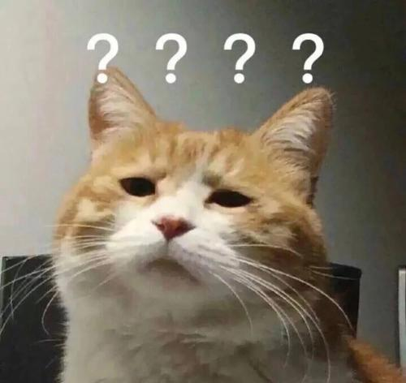

University of California, Santa Cruz
Lubin Tu
=============================================================================
Final Project: Meteorites Inbound

=============================================================================
Assignment 1: Music Visualization with Particle System
- Particles' speed, lifetime, and scale are determined by the frequency of music, for example, the higher frequency of music has, the slower particles move, and faster their lifetime decreases.

=============================================================================
Assignment 2: Terrain Generation with Perlin Noise
- This project uses noise() to randomlize the altitude of blocks. Then uses those random altitude value to determine the hight of each box(). Also, for some range of altitude, the texture of blocks will be different. For example, lowest altitude will use dark blue texture for block as deep sea.

=============================================================================
Assignment 3: Interactive Artist NPC with Generative Grammars
- This project uses 6 different grammers to randomly genetate the art piece. They are +, - for rotation, [] for branching, L for changing position, C for drawing. Player can use keyboard to move around inside the house and talk to NPC if nearby. Then NPC will ask if player want to see art works or not.

=============================================================================
- This project uses the provided code to generate the car race. At each end of race, the further car runs, the easier they will be selected. And selected cars will reproduce a new sets of cars with small mutations. For the reproduce part, each car has 4 type of data,. so I just let two parents randomly exchange their sets of data.. Then those new cars will run for a new match and record the best car.

=============================================================================
- See detail in the link above
=============================================================================
Assignment 5: Music with Markov Chains
- This project uses the provided code to load and play the MIDI files. Then the program uses Markov Chain to train the collected MIDI data and put into a list of object's probablity, and uses this list to randomly generate MIDI data then play it, the way I used Markov Chain is to get the next elements of the current element and calculate the final probablities for them.
=============================================================================